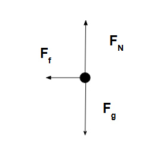
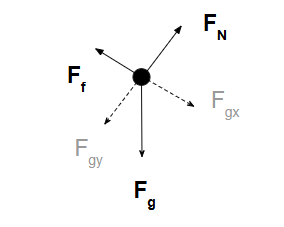
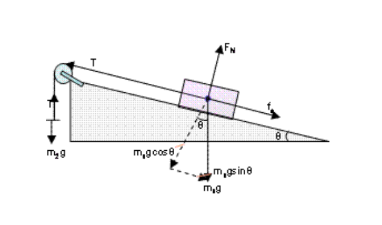

Free Body Diagrams (FBDs)
A Free Body Diagram is a visual representation of all the external forces acting on a single object. It helps isolate the object and focus only on the relevant interactions, making it easier to apply Newton's Laws.
What is a Free Body Diagram?
A Free Body Diagram shows an object (usually a box or dot) and all the forces acting on it, represented by arrows. Each arrow points in the direction the force acts and is labeled with the type of force (e.g., Fg for gravity, FN for normal force, etc.).

Steps to Draw a Free Body Diagram
- Identify the object you’re focusing on. Isolate it from the rest of the environment.
- Draw a dot or a simple box to represent the object.
- Draw arrows for each external force acting on the object. Start the arrow at the object.
- Label each arrow with the type of force (e.g., FT for tension, Ff for friction).
- Ensure directions are accurate. Arrows must point in the actual direction the force is applied.
- DO NOT SHOW COMPONENTS UNLESS SPECIFICALLY ASKED

Tips for Accuracy
- Keep the diagram uncluttered and arrows proportional.
- Use coordinate axes if needed for breaking forces into components.
- Ignore internal forces — only draw forces acting **on** the object, not those it exerts.

🎮 Free Body Diagram Matching Game
Read the situation below and click on the image that best represents the correct Free Body Diagram.
Loading...